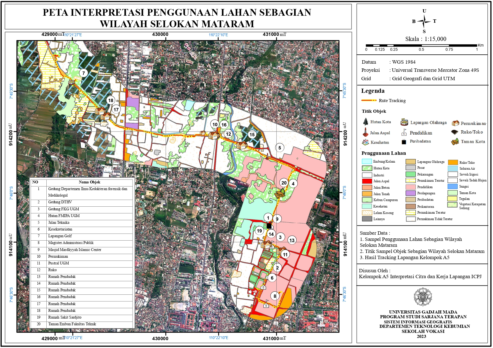
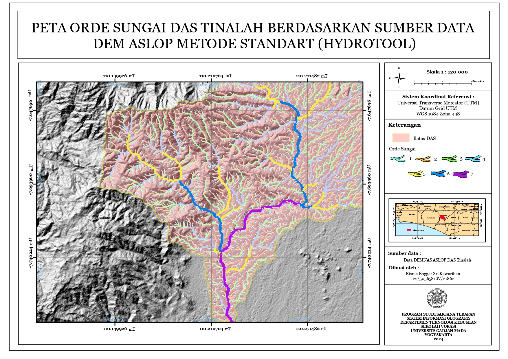
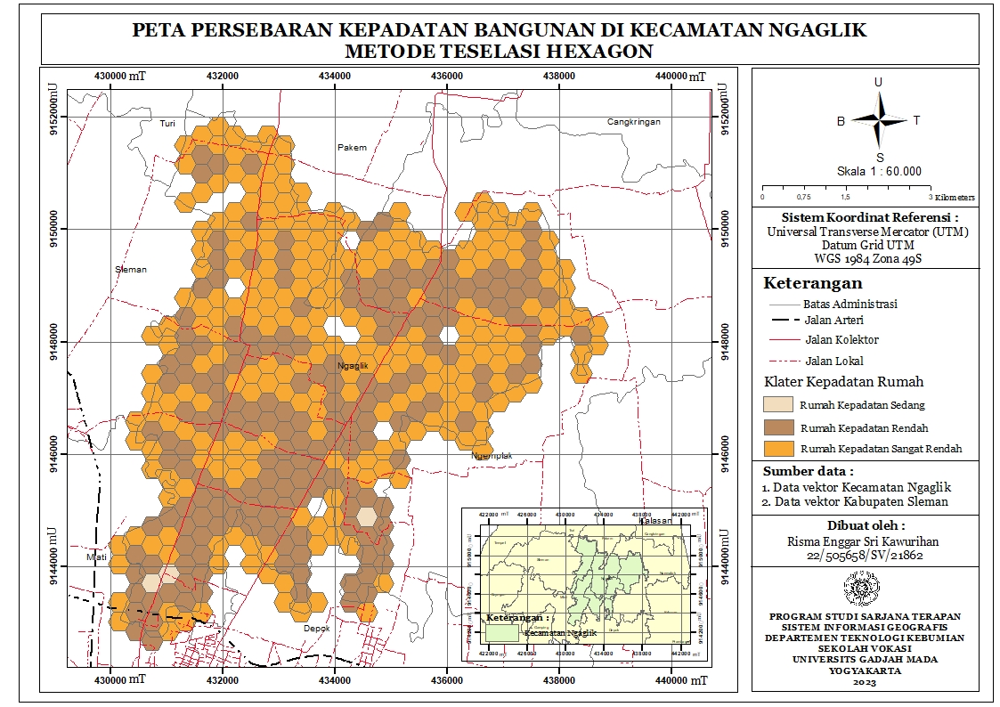
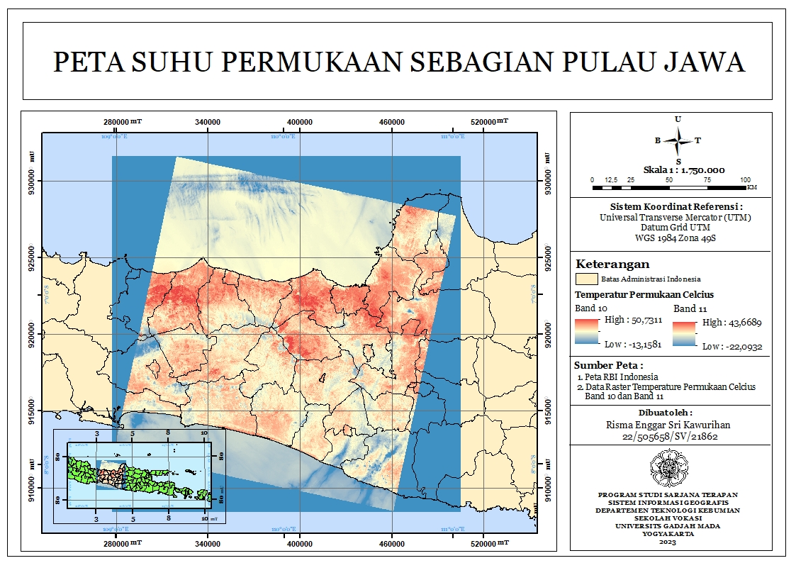
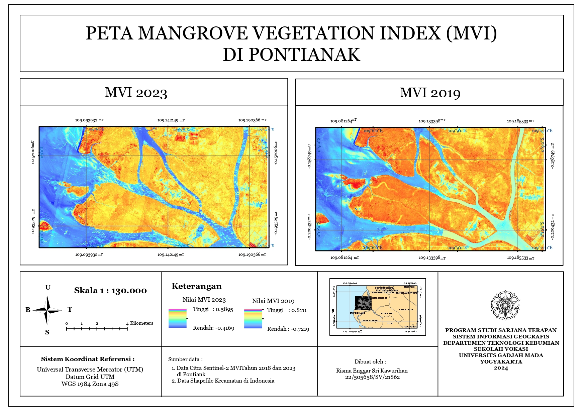
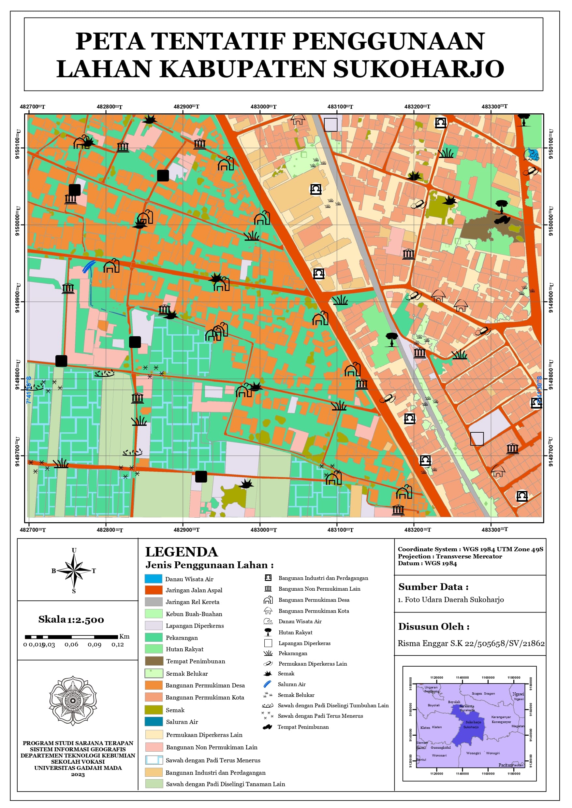
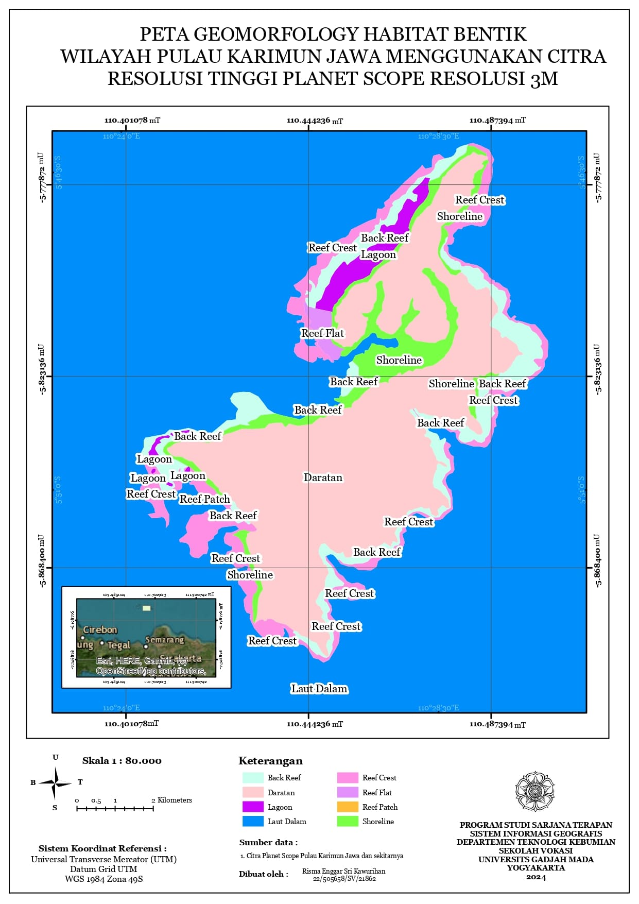

Tsunami Hazard Map
Created using ArcGIS through tsunami hazard classification, spatial overlay, and coastal
analysis. The map identifies tsunami risk zones from very low to very high to support disaster
mitigation and evacuation planning.

Land Use Map of Selokan Mataram
Created using ArcGIS through digitization, spatial editing, and land use classification based on
satellite imagery and spatial data. The map illustrates land use distribution along the Selokan
Mataram area to support spatial and environmental analysis.

River Order Map
Developed in ArcGIS using DEM-based hydrological analysis, including flow direction, flow
accumulation, and stream ordering. The map represents river hierarchy for watershed and water
resource analysis.

Building Density Map
Produced in ArcGIS using building footprint data and spatial density analysis. The map visualizes
building concentration to support urban planning and infrastructure management.

Temperature Map
Created with ArcGIS by processing temperature observation data and applying spatial
interpolation. The map illustrates regional temperature distribution for climate and
environmental analysis.

Flow Map of Air Passenger Volume
Designed in ArcGIS using airport location data and passenger movement flow visualization. The map
highlights connectivity and travel intensity between airports through flow line symbology.

Population Map
Created in ArcGIS by joining population statistics with administrative boundary data and applying
graduated symbology. The map shows spatial population distribution for development and public
service planning.

Land Use Map
Produced using ArcGIS through land use classification, digitization, and spatial editing from
satellite imagery. The map presents land use categories for environmental and spatial planning
analysis.

Spatial Pattern Map
Created in ArcGIS by integrating regional spatial planning (RTRW) data and land allocation
layers. The map visualizes protected and cultivation zones for spatial planning purposes.

Mangrove Vegetation and Index Map
Developed in ArcGIS and ArcGIS by processing satellite imagery and calculating mangrove
vegetation indices. The map displays mangrove distribution and vegetation density for coastal
ecosystem monitoring.

Tentative Land Use Map
Created using ArcGIS through digitization, spatial editing, and overlay analysis of planning
data. The map presents a preliminary land use design for spatial planning evaluation.

Geomorphology Map
Produced in ArcGIS using DEM analysis, terrain classification, and landform interpretation. The
map identifies geomorphological units for geological and hazard assessment.

Regional Rainfall Map
Created with ArcGIS by processing rainfall station data and generating interpolated rainfall
surfaces. The map illustrates rainfall distribution for water resource and flood mitigation
analysis.

Land Use Map of Yogyakarta
Developed in ArcGIS through digitization, spatial data processing, and land use classification.
The map visualizes the distribution of land use types across Yogyakarta for spatial planning and
land use analysis.